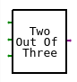

xLogicCircuits InfoxLogicCircuits is a simulator for logic circuits made up of logic gates. A logic gate is a simple circuit with one or more inputs and one output. Inputs and outputs can be either ON or OFF, and the value of a gate's output is completely determined by the values of its inputs. A gate does a simple computation. Circuits that do complex computations can be built by connecting outputs of some gates to inputs of others. In fact, an entire computer can be built in this way. (xLogicCircuits, however, is not meant for very complex circuits.) |
Brief Instructions
The large beige rectangle in the xLogicCircuits web app is a "circuit board" where you can construct circuits from gates, inputs, outputs, and other components. There is scrolling list of available components to the left of the circuit board. For the NOT, AND, and OR gate in the list, click the circular red arrow to rotate the gate by 90 degrees. You can drag a component from the scrolling list onto the circuit board to add a copy of that component to the board. Note that inputs and outputs can only lie along the outside edges of the circuit board. To move a component that is already on the circuit board, shift-click and drag it, or use the middle mouse button to drag it.
To add a wire to the circuit, drag from the source of the wire to the destination. Tacks can be used to allow branching of wires and to make the circuit neater. A tack can be both a source and a destination for wires. Double-click an existing wire to add a tack. As you draw a wire, if you release the mouse button and then quickly press it again, you can "drop" a tack at that point.
A checkbox above the circuit board lets you turn power on and off. When power is on, clicking an INPUT component will toggle that input between ON and OFF, and the change will then propagate through the rest of the circuit. Inputs and outputs that are ON have red centers. Wires that are on are red.
The circuit in the circuit board can be "iconified," which turns it into a subcircuit and adds it to the scrolling list of available components. (Just click the "Iconify" button.") You can then add a copy of the subcircuit to the circuit board by dragging it onto the circuit board, just like any other component. There is more information about subcircuits below. You can hover your mouse over any button to get information about it.
Click a component or wire on the circuit board to select it. There is a "Delete" button that will delete the selected item. If a gate or subcircuit is selected, it will be surrounded by a box, and you can resize the component by dragging on a corner of the box.
(Note for touch-screen users: xLogicCircuits is really meant to work with a mouse, but it does have limited support for touch screens. You can drag components onto the circuit board, and you can add wires by dragging from one component to another. Tap a component to select it. Tap an INPUT while Power is on to toggle the input on and off.)
Logic Gates and Logic Circuits
The scrolling list of components in xLogicCircuits starts with three kinds of logic gate. A NOT gate has one input and one output. The rule that determines its behavior is that the output is ON if the input is OFF, and the output is OFF if the input is ON. An AND gate has two inputs and one output. Its output is ON if both of its inputs are ON; the output is OFF if one or both inputs are OFF. Finally, an OR gate has two inputs and one output. Its output is ON if at least one of the inputs is ON; the output is OFF if both inputs are OFF.
A gate can face right, down, left, or up. Click the red arrow near the gate to rotate it. To add a copy of the gate, in its current orientation, to the circuit board, click on the gate and drag onto the circuit board. If you release the mouse before moving the gate fully onto the circuit board, the new gate will disappear. Once you have moved it onto the circuit board, it is constrained to lie within the boundaries of the board, even if you move the mouse outside the board. When you release the mouse, the new gate is added to the circuit, and it is selected so that you can, for example, resize it or delete it.
The next two items in the scrolling list are Input and Output components. These components provide the connection between the circuit that you are constructing on the circuit board and the outside. You can think of Inputs as switches that you can turn ON and OFF. And the Outputs will be turned ON and OFF by the circuit, depending on the computations that it performs. When you drag an input or output onto the circuit board, it is constrained to lie along one of the edges of the board.
The final standard component in the scrolling list is a TACK. (When the program starts up, you will have to scroll the list to see it.) A TACK represents a branching point in a wire. It can have one wire for input and any number of wires for output. Its function is simply to propagate the value on its input wire to all of its output wires. Note that wires can only physically intersect at TACKs; when one wire simply crosses another wire in the circuit, they do not interact in any way. You can drag a TACK onto the circuit, but unless you are using a touch screen, you will probably never need to do that. You can insert a TACK into an existing wire by double-clicking the wire. And as you are drawing a wire, you can insert a TACK by releasing the mouse button and then quickly pressing it again at the same position—like a quick click in the middle of a drag operation.
You can add a wire to the circuit by dragging from the source of the wire to the destination. That is, press the mouse button on the source component, move to the destination component while holding the mouse button down, and then release the button. An Input, gate, or TACK can be the source of a wire; an Output, gate, or TACK can be the destination. For Inputs, Outputs, and gates, the wire will actually attach to the little input and output "nubs" that stick out of the component. An input nub can only connect to one wire, but an output nub can have any number of connections. You don't have to click the little output nub of the source; clicking anywhere on the source component will do, and you don't have to release the mouse right on the input nub of the destination. Note however that when a component has several available nubs, the position of the mouse will determine which nub the wire connects to. You will get used to the way this works with a little practice.
To test your circuit, turn power on using the "Power" checkbox above the circuit board. Click the inputs to the circuit to turn them ON and OFF. Wires that are ON are red, and OFF wires are black (or they are magenta or blue when selected). Note that it's OK to have the power on while you construct or modify a circuit.
To help you build circuits, the program has support for undoing and redoing any operation. The program saves up to 50 undo operations. Also, there is "Delete" button that deletes the currently selected component or wire. If a component is deleted, any wires that are connected to it are also deleted.
Subcircuits

A very important aspect of xLogicCircuits is its ability to make and use subcircuits.
That is, the circuit on the circuit board can be chunked into a single component and
added to the scrolling list of available components. I call this "iconifying" the circuit;
to do it, just click the "Iconify" button. An example of an iconified circuit is shown on
the right. The name for the circuit is taken from the "Title" input box that is above the
circuit board.  This example was made from the rather complex circuit shown at the left. The output of this
circuit comes ON if exactly two out of its three inputs are on. Note that the three Inputs
on the left of the circuit become the three green input nubs on the left edge of the subcircuit icon,
and the circuit's Output becomes the output nub on the right edge of the icon.
This example was made from the rather complex circuit shown at the left. The output of this
circuit comes ON if exactly two out of its three inputs are on. Note that the three Inputs
on the left of the circuit become the three green input nubs on the left edge of the subcircuit icon,
and the circuit's Output becomes the output nub on the right edge of the icon.
Once a subcircuit icon is in the scrolling list, you can drag a copy onto the circuit board, just like you would a gate. You can then attach wires to the input and output nubs of the subcircuit. (It's important to understand that when you drag a subcircuit onto the circuit board, you get an independent copy of the subcircuit. It is possible to edit the contents of a subcircuit on the circuit board; doing so does not affect the original or any other copy. This could get confusing, and it should only be done with care.)
Subcircuits can have their own subcircuits. There is no set limit to the number of levels of nesting that you can have, and it is possible to build up very complex circuits using this feature. (But keep in mind that xLogicCircuits is not really designed to work with very complex circuits.)
Buttons
Most of the buttons and other user interface elements in xLogicCircuits are fairly self-explanatory, and short descriptions are available if you hover your mouse over them. But here is more detailed information about some of them:
- "New" button — Deletes the current circuit from the circuit board and any subcircuits in the scrolling list. Note that this action is undoable.
- "Load" button — Lets you select a file from your computer to be loaded into the xLogicCircuits app. The previous contents of the app will be deleted first, as if you had clicked "New." The app can only load files that have been previously created and saved by xLogicCircuits. (Note that some web browsers might make this look like uploading a file to the Internet but in fact the file will only be loaded into the xLogicCircuits app running in your browser.)
- "Save" button — Save the current circuit and scroll list items to a file on your computer. That file can be loaded back into xLogicCircuits using the "Load" button. (Note that some web browsers might make this look like downloading a file from the Internet.)
- Speed popup menu — When power is turned on (using the "Power" checkbox), xLogicCircuit continually rechecks the input and outputs to gates and tacks, to propagate any changes through the circuit. The speed popup menu determines how many times per second that check is made and hence how fast changes propagate. Fast Speed means about 180 checks per second, Moderate Speed about 20, and Slow Speed about 2 per second. (Ordinarily, you would leave this set to Fast Speed.)
- "Shrink" and "Enlarge" buttons — If there is a subcircuit on the the circuit board, and if you have selected that subcircuit by clicking it, the "Enlarge" button will be enabled. This will expand the subcircuit to fill the entire circuit board, and the rest of the original circuit will be hidden. You can also enlarge a subcircuit on the circuit board simply by double-clicking the subcircuit. While a subcircuit is enlarged, the "Shrink" button is enabled; clicking it will shrink the contents of the circuit board back down to a subcircuit icon and will again show the circuit that contains the subcircuit.
- "Title" input — The input box displays the name, or title, of the circuit that is currently displayed on the circuit board, and lets you edit that name. When the user doesn't specify a name, the app makes up names like "Untitled 1", "Untitled 2", and so on.
- "Delete" button — When something is selected (by clicking it), the "Delete" button is enabled. Clicking the button will delete the item. This applies to components and wires on the circuit board and to subcircuit icons in the scrolling list.
- "Clear" button — Deletes everything from the circuit board, except that when the circuit board shows an enlarged subcircuit, the inputs and outputs along the edges of the circuit board are not deleted (you usually don't want to delete them because they connect to wires outside the subcircuit).
- "Iconify" and "Deiconify" buttons — The "Iconify" button removes the current circuit from the circuit board, makes it into a subcircuit icon, and adds that icon to the scrolling list so that it can be used as a subcircuit inside other circuits. "Iconify" is only available if the circuit board shows a non-empty main circuit; it is not available when the board shows an enlarged subcircuit. The "Deiconify" button is enabled when a a subcircuit icon in the scrolling list is selected. It will remove the subcircuit from the scrolling list and put it on the circuit board to be edited. If the circuit board already contained a circuit, that circuit is iconified and added to the scrolling list. You can also deiconify a subcircuit by double-clicking its icon in the scrolling list.
Combinational Circuits
In a logic circuit, it is possible to connect an output from a component back to an input to the same component, possibly through a sequence of intermediate components. This creates a "feedback loop" in the circuit. A circuit that does not contain any feedback loops is called a combinational circuit. In a combinational circuit, the state of the Outputs from the circuit is completely determined by the state of the Inputs. For some examples of combinational circuits, click this link:
Show xLogicCircuits with Combinational Examples.
The circuit board in this example file shows three ways of computing the "XOR" of two inputs. The output of XOR is true if one input is ON and one is OFF; the output is OFF if both inputs are on or if neither is on. You will notice that the three Outputs of this circuit always have the same value, no matter how the two Inputs are set. (This shows, in particular, that there can be many ways to compute a given output using logic circuits.)
There are five other example combinational circuits available as icons in the scrolling list. Remember that you can view a subcircuit by double-clicking its icon, or by selecting it and hitting the "Deiconify" button. Most interesting are the three circuits that do binary arithmetic. Binary, or base-2, numbers are made up of bits, that is, of zeros and ones. Circuits can work with binary numbers by taking OFF to mean 0 and ON to mean 1. You need to understand some binary arithmetic to really appreciate the example circuits. But the "Adder" circuit computes the sum of three one-bit binary numbers, giving a two bit answer. The 4-bit Add circuit adds two four-bit binary numbers, while 4-bit Minus subtracts one four-bit number from another.
Sequential Circuits
A logic circuit that contains a feedback loop is a sequential circuit. In a sequential circuit, the state of the Outputs can depend not just on the current states of the Inputs, but on the history of previous Input states as well. This makes it possible to build memory circuits: A circuit can store a value that was put on its Inputs in the past, and the stored value can be read on the circuit's output. A single OR gate and a feedback loop can make a circuit that remembers whether its input has ever been turned on in the past:
If the Input is turned on, the Output of the OR gate turns on because one of its Inputs is on. If the Input is then turned off, the out output of the gate stays on, because the feedback loop ensures that one of the gate's inputs is still on. In fact, there is no way to turn the output off (except by turning off the power entirely). For more examples of sequential circuits, click here:
Show xLogicCircuits with Sequential Examples.
When this example file loads, the circuit board shows an R-S Latch. It's essentially the OR gate example, with some extra circuitry added to make it possible to turn the output off. To store a one in the R-S Latch, turn the top input on and then off. To store a zero, turn the bottom input on and then off. As long as both inputs are off, the circuit remembers the stored value, which can be read on the output.
A D latch is another kind of one-bit memory: To store a one, turn the left input on, and while it is on, turn the bottom input on and then off. To store a zero, turn the left input off and turn the bottom input on then off. A Flip Flop is similar, but the output will only change as the bottom input is turned off, which gives more control over timing. The 4-bit Register uses four Flip Flops to store a four-bit binary number. This starts to give you an idea of how computer memory can be constructed using logic circuits. Finally, the Binary Counter example is a circuit with no inputs, but while the power is on, its four outputs change in a pattern that represents counting with 4-bit binary numbers.
(For an even more complex example, see xLogicCircuits with RAM. The "RAM" in this example is a "Random Access Memory" with four locations, where each location is a four bit register. On the left edge of the RAM are four "data" Inputs for specifying a value to be stored, and two "address" Inputs for specifying the address, that is, for selecting which register will be used. On the right edge are four Outputs showing the value that is stored in the selected register. On the bottom edge is a "load" input; turning that input on and then off will store the data input value into the selected register. This example also uses a multiplexer, or "MUX," which is an important kind of combinational circuit.)
A note about sequential circuits: Keep in mind that it takes time for changes to propagate through a circuit. When I say "turn an input on and then off," I really mean "turn the input on, wait long enough for the signal to propagate, then turn the input off." If you don't wait long enough, the circuit won't work correctly. (This is one reason why you can't arbitrarily increase the clock speed of a computer.)
About the Simulation
Real logic circuits are made up of electronic components such as transistors and resistors. xLogicCircuits does not attempt to simulate the physical behavior of such components. It only simulates their "logical" behavior. For example, in xLogicCircuits, an AND gate has two inputs, which can be either ON or OFF, representing the logical values TRUE and FALSE. It has an output, whose value is given by the logical "and" of its two inputs: The output is ON if the first input is ON and the second input is ON. In a physical AND gate made of transistors, input and output states are actually given by voltages, which can be either high or low (for example, +3 volts or -3 volts), and can also be unpowered (zero volts). Furthermore, voltages in a physical system are always at least a little approximate. xLogicCircuits ignores such physical complications. In a physical circuit, an input that is not connected to a wire would be unpowered, but in xLogicCircuits, a disconnected input is considered to be OFF; this is a significant difference, but it does not really affect the logical behavior.
When a change is made to one of the inputs of a physical circuit, it takes some time for the effect of that change to propagate to the rest of the circuit. This is because it takes some time for a transistor to respond to a change in its inputs and, to a lesser extent, because it takes time for a signal to move along a wire. Something similar happens in xLogicCircuits: As long as the power is on, the program continually checks all the components of the circuit. Any change made to the inputs of the component (during the previous check) are applied to the output (during the current check). So a change only propagates through one component during each check. Note that this applies to TACKs in xLogicCircuits, so that a change in a wire will only propagate through one TACK in each cycle of checks. In a large circuit, it can take many cycles of checks for a change to propagate through the circuit. The fact that it takes time for signals to propagate through a circuit can lead to oscillating behavior. (This is also true in physical circuits.) For example, suppose that the output from a NOT gate is connected to the input of that same NOT gate. Since the input of the NOT gate is OFF, the output is ON, but that change propagates along the wire back to the input, so the input to the gate turns OFF, which then tuns the output OFF, which turns the input OFF, which turns the output ON, and so on. By inserting TACKs along the path from the output back to the input, as shown in the picture, you can slow down the process and watch the signal move along the wire. This might seem like a minor point, but "feedback loops" like the one in this example are important for memory circuits, as discussed above.